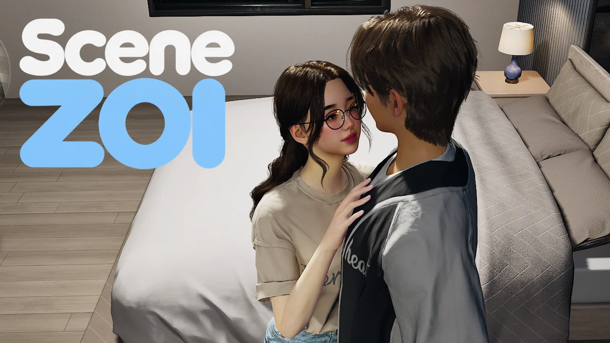

Download SceneZOI
A free, open-source animation framework for inZOI. Play synchronized scenes, add animation packs, or build your own.

Install & play
Install SceneZOI
SceneZOI requires inZOI and runs on its own. Choose the packaged ZIP from GitHub Releases.
- Extract the ZIP. Close inZOI and extract it to
Documents\inZOI\Mods. Check thatmod_manifest.jsonis directly insideSceneZOI_93C44199. If you’re updating, replace the previous mod folder. - Enable SceneZOI. Turn it on in the game’s mod management menu, then load your save.
Start a scene
Without a gameplay mod: Enable the manual picker once in Scene Settings.
- Click your controlled Zoi and choose Solo SceneZOI session below AI Emote to open Scene Settings.
- Click the cog icon. Under Debug, enable SceneZOI manual start, then exit the solo session.
- Use the debug start on your controlled Zoi or supported furniture to open the picker and start a scene.
With a gameplay mod: Start scenes through the gameplay mod's own interactions. You can leave debug start off. VelvetZOI is one example. VelvetZOI on Nexus Mods · VelvetZOI on Patreon. Have an idea for your own mod? Build a gameplay add-on for SceneZOI.
Optional HZoi content pack
SceneZOI itself is all-ages. HZoi is a separate adult content pack. Extract HZoi into the same Mods directory, check that HZoi_660649D8 contains its own mod_manifest.json, and enable both mods. Get HZoi
SceneZOI ships no nude body meshes. For adult content, a compatible body replacer such as Supponpon or ZoiBits is recommended. Jiggle physics are optional. SceneZOI supports compatible male body replacers automatically. Report a compatibility issue
What’s new
Release notes are shown in English.
Read the latest changelog on GitHub.
What SceneZOI does
SceneZOI is a modular, data-driven framework. Animation packs describe what plays and how it’s presented. Gameplay add-ons decide when a scene starts and what happens afterward.
- Playback & placement
- Synchronized body and attachment tracks, including supported furniture, with navigation, playback speed and pause.
- Solo & group scenes
- Explicit roles and configurable metadata. Multiple sessions can run side by side, including background and autonomous scenes started by add-ons.
- Presentation
- Facial expressions, gaze, voices, sound effects, outfits and animated attachments.
- Tasks & progress
- Configurable progress rates and completion responses. HZoi uses these systems for its own scene progression.
- Player settings
- Saved sound-effect, voice and task-rate controls, with separate female and male settings where applicable. The interface supports 15 languages.
- Authoring & integrations
- Use compatible tracks from independent Unreal animation libraries. The public API lets add-ons find and start scenes, manage sessions, restrict navigation and respond to events.
Contributors
- acenetizenMaintainer and lead developer
Support developers
SceneZOI is free. You can support individual contributors through their own pages.
Source code & authoring tools
Build your own animation packs and gameplay add-ons with the guides and SDK. Maya and Blender rigs and exporters are linked from the first-animation guide. SceneZOI is licensed under GPL-3.0-only. The applicable inZOI ModKit terms also apply when using the ModKit.